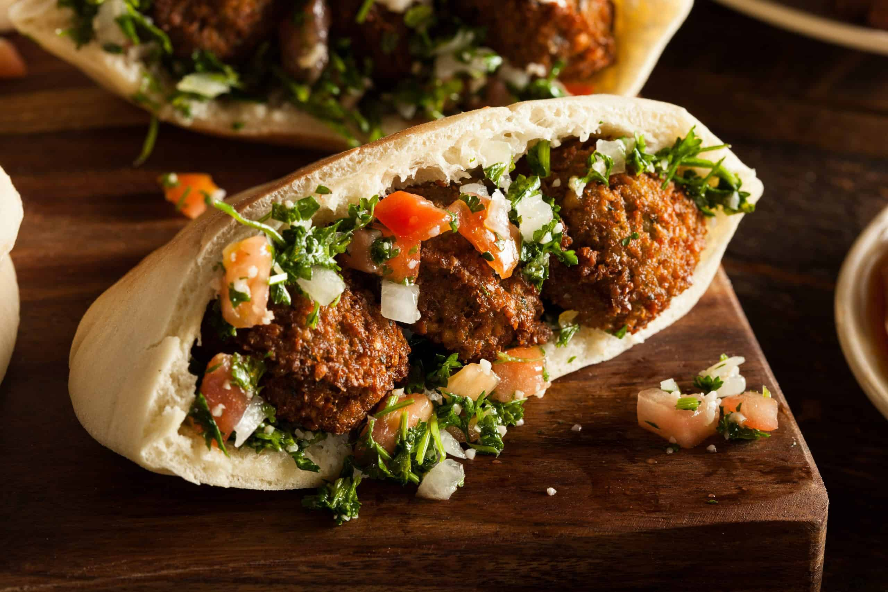

Afghan Boloni

Ingredients
- dried chickpeas
- baking soda
- onion
- garlic
- parsley
- cumin
- coriander
- cayenne
- baking powder
- cooking oil
Preparation
- First you quick-soak the chickpeas in water, salt, and a bit of baking soda in the Instant Pot. This takes just 10 minutes of pressure cooking time (plus 10 minutes or so for the pot to come up to pressure and about 10 minutes to release the pressure).
- Next you puree the chickpeas with the other ingredients.
Form the mixture into patties.
- Deep fry or pan fry them in cooking oil or fry them in an air fryer.